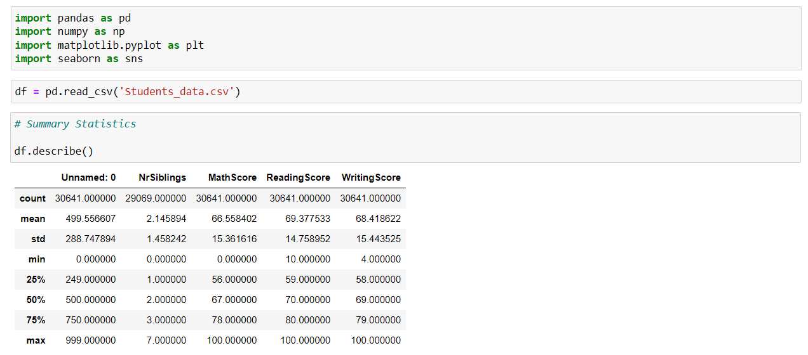
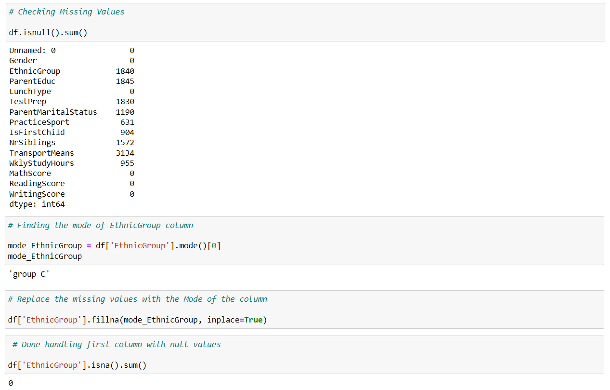
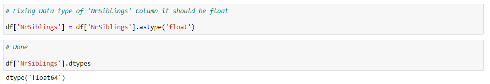
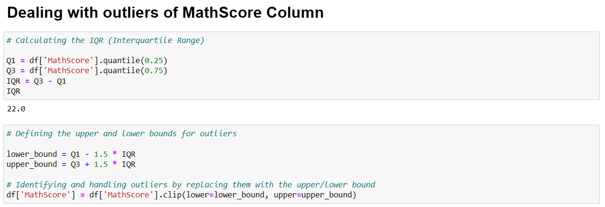
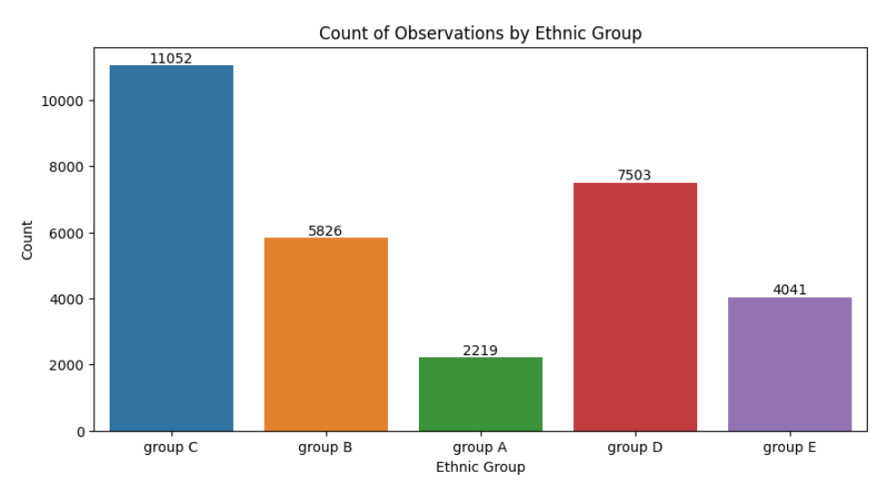
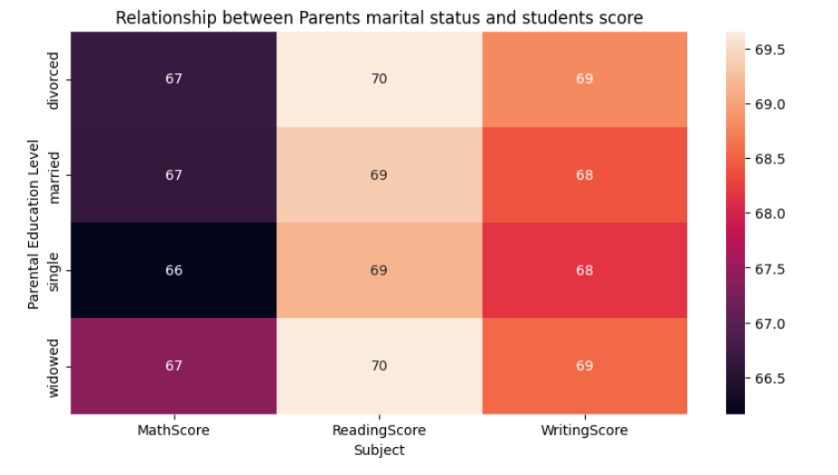
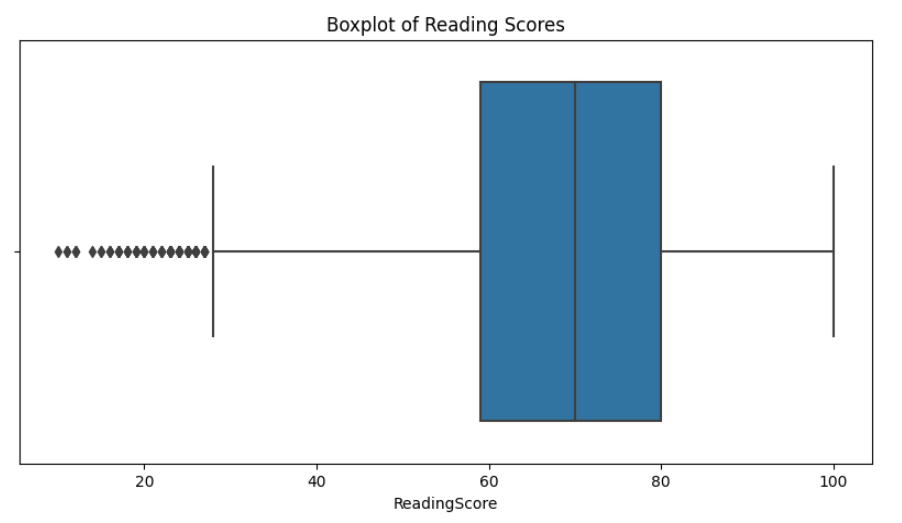

Student Performance Analysis - EDA Project

Description:
This project involved an in-depth exploration and analysis of a student dataset using Python and data manipulation libraries. The dataset, comprising various student attributes, underwent thorough cleaning and preprocessing to extract meaningful insights.
Key Steps:
Data Loading and Initial Exploration:
Imported necessary libraries (Pandas, NumPy, Matplotlib, Seaborn).
Loaded the dataset using Pandas.
Checked the first few rows, summary statistics, and information about the dataset.

Handling Missing Values:
Identified missing values in different columns.
Imputed missing values using appropriate strategies (mainly using mode for categorical variables).

Data Cleaning:
Dropped unnecessary columns ('TestPrep', 'Unnamed: 0').
Corrected data types (converted 'NrSiblings' to float).
Fixed data in the 'WklyStudyHours' column.

Exploratory Data Analysis:
Visualized the distribution of gender in the dataset.
Explored the relationship between parental education levels and students' scores.
Investigated the impact of parental marital status on student scores.
Calculated and visualized the correlation matrix for numeric columns.
Handling Outliers:
Visualized and dealt with outliers in Math, Reading, and Writing scores using boxplots and the interquartile range.

Ethnic Group Analysis:
Explored the distribution of different ethnic groups in the dataset.
Visualized the count of observations for each ethnic group.

Visualizations:
Visualizations were employed to better understand the distribution of variables, relationships between them, and the impact of certain factors on student performance. Heatmaps, boxplots, and countplots were utilized to present key findings.



Conclusion and Insights:
The analysis revealed meaningful insights into the dataset, with a focus on the impact of parental education on student scores. Heatmap visualizations demonstrated positive correlations between parental education levels and students' math, reading, and writing scores.
Final Results:
In conclusion, this project not only provided a comprehensive exploration of the dataset but also uncovered meaningful relationships and trends. The data cleaning and preprocessing steps undertaken ensure the reliability of subsequent analyses, laying the groundwork for informed decision-making in educational contexts.